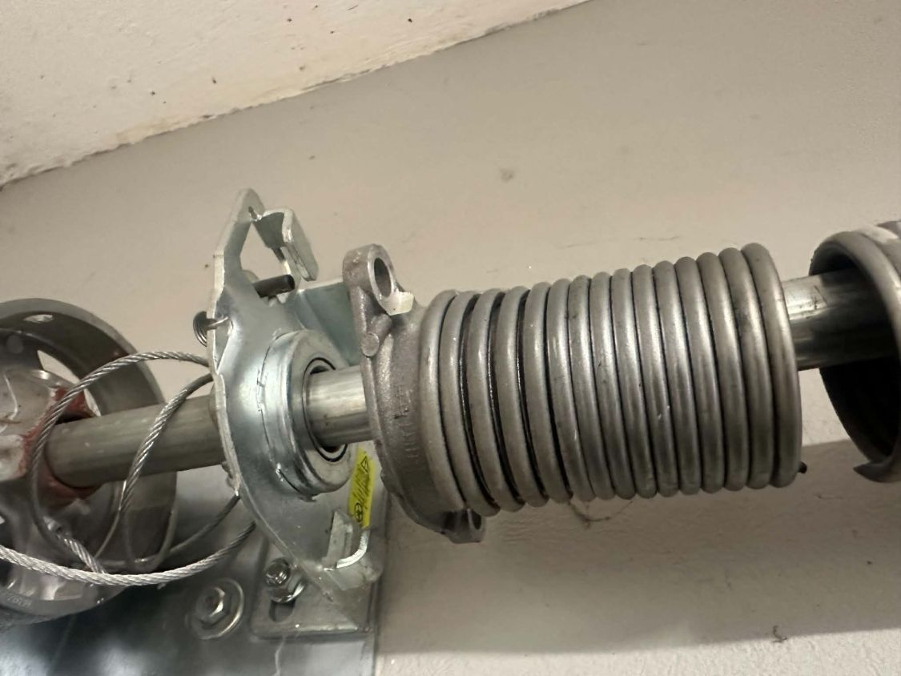
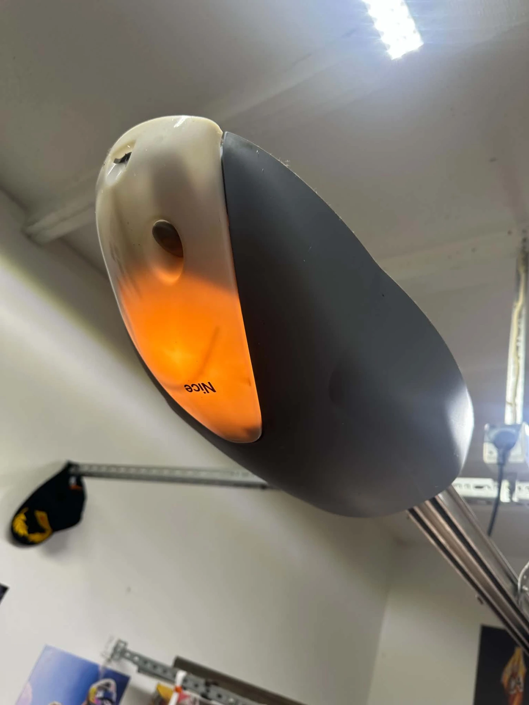

Fachowa naprawa bram garażowych segmentowych i uchylnych w Rzeszowie i okolicach. Sprężyny, linki, rolki, napędy — dojazd do klienta, wycena przed pracą.
Zadzwoń: 513 960 096Najczęstsze powody wezwania serwisu bram garażowych:
Kompleksowy serwis bram garażowych obejmuje:

Bramy segmentowe składają się z poziomych paneli prowadzonych po szynach — przy ich naprawie kluczowa jest kontrola rolek, zawiasów i linek bocznych. Bramy uchylne pracują na sprężynach i dźwigniach — ich regulacja wymaga doświadczenia, by zapewnić bezpieczne wyważenie.
Serwisujemy bramy garażowe marek Hörmann, Wiśniowski oraz napędy Nice, FAAC, Came, Somfy i innych producentów. Dobieramy części oryginalne lub sprawdzone zamienniki — zawsze po uzgodnieniu z klientem.

Coroczna konserwacja bramy garażowej to smarowanie prowadnic, rolek i zawiasów, sprawdzenie napięcia sprężyn i siły napędu oraz kontrola fotokomórek i zabezpieczeń. Przegląd przed zimą pozwala uniknąć awarii w mroźne dni, gdy smary gęstnieją, a elementy metalowe kurczą się.
Sprężyny w bramie garażowej pracują pod bardzo dużym naprężeniem. Próba samodzielnej naprawy lub regulacji grozi poważnym urazem. Jeśli widzisz pękniętą sprężynę lub linka jest zerwana — nie używaj bramy i zadzwoń do nas.
Telefon → ustalamy termin dojazdu → przyjeżdżamy do Ciebie → oceniamy stan bramy i podajemy koszt naprawy → po Twojej akceptacji wykonujemy pracę na miejscu.
Zobacz też:
Zadzwoń — przyjedziemy i wycenimy naprawę na miejscu.
Zadzwoń: 513 960 096